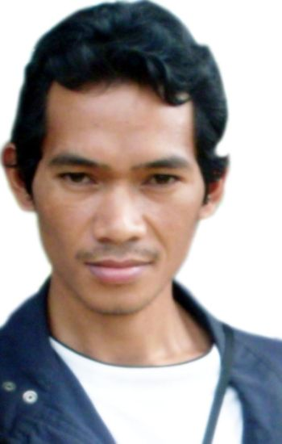
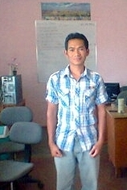
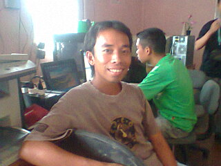
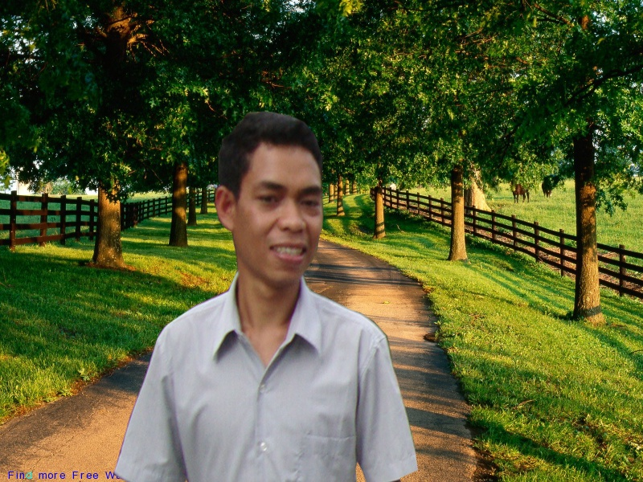
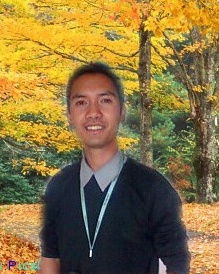
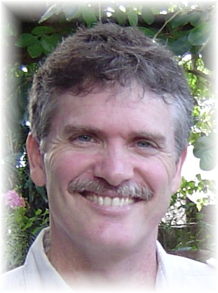

Home
MALACAI overview
Board
Staff
Location
Activities
Matigsalug language
Resources (Bible, Dictionaries, Stories, etc.)
Links
Contact
Those who are working at MALACAI on the Matigsalug Bible Translation Project (MBTP) include:
Alex (Office Manager)


Alex was born in Luwey, Sinuda in 1983 and is the first in a family of six children (all boys). Neither of their parents were able to finish elementary school and now they are both farmers.
Alex completed both elementary and secondary school in Sinuda, and then in 2005, he finished a vocational course (Agricultural Technology) at Cotabato Foundation College of Science and Technology. He's been working in Bible translation since 2006. In 2011 he finished a four year course (Bachelor of Elementary Education, major in Generalist) at Holy Child School of Davao as a working student (working at translation from Monday to Friday, and studying Saturday and Sunday). In September 2011, Alex passed the Licensure Examination for Teachers.
Three trainees
Diony


Diony was born in Sinuda, Kitaotao, Bukidnon in 1987. He is the third of seven children. He graduated from elementary and then secondary school in Salumay, Marilog District and finished his Bachelor of Elementary Education at Holy Child School of Davao in October 2010, passing the Teachers' Licensure Examination in September 2011.
He also completed a vocational course as a welder at Endonela Institute of Technology Foundation, and passed the assessment for National Competency level II (NC II) at Bansalan Tesda traning center, Davao Del Sur in February 2011.
Ricky

Ricky (also known as Rani) was born in Sinuda, Kitaotao, Bukidnon in 1990. He is the third of six brothers. He graduated from elementary school in March 2006 and then from high school four years later.
Ricky still hopes to go to college once finances allow, but meanwhile he is training as a mother-tongue Bible translator and helping to translate the Matigsalug Old Testament.
Bern


Bernard is the eldest in his family with four sisters and one brother. He graduated from elementary and high school in Bukidnon but did not proceed in college due to lack of finances. Now he is one of the trainee mother-tongue translators at MALACAI, Sinuda, Kitaotao, Bukidnon, Philippines.
Rose
Rose was the first to start working with MALACAI as a mother-tongue translator and still helps as she is able.
Tano


Tano was born to both Matigsalug parents. He is the second of the seven siblings and married to Irene who is also a local in Sinuda village where Tano was born. They have two daughters. Tano finished his primary studies in the village in Sinuda and pursued his degree in Education at Holy Child School of Davao. He then felt the need for further studies in order to be more effective in handling the tasks God entrusted to him, so he is now pursing graduate study in a seminary in Manila while also assisting the Matigsalug Bible Translation Project in Sinuda.
Tano says: God has a plan in my life and even in my childhood he manifested slowly the thing(s) he wants me to be. My first teacher was the Bible. I learned how to read through the small, red Bible done by Gideon International. It opened up the world of salvation and grace to my heart that led to my understanding and passion on missiological tasks especially facilitating and helping Bible translation projects to the unreached people groups. My plans and desires for Manobo languages and beyond is to see them communicating with the Ultimate Creator (Manama) and praising Him through the language that speaks to their heart. People may think that this is an impractical choice in life but I would consider it as a notion of what constitutes true happiness. For one author said, "Many people have the wrong idea as to what constitutes true happiness; it is not a thing of self-gratification but through fidelity to a worthy purpose." And my purpose is to carry out the Great Commission through contextualization of the gospel proclamation.
Robert
Robert helps with the Old Testament translation part-time from New Zealand over the Internet. He does checking and back-translating of the Old Testament books, as well as remote computer server maintenance and running this website.
Jeff (former team leader and funds administrator)

This page last updated: 28-Mar-2026
Copyright © 2010-2026, Matigsalug Manobo Language Christian Association, Inc


.JPG)